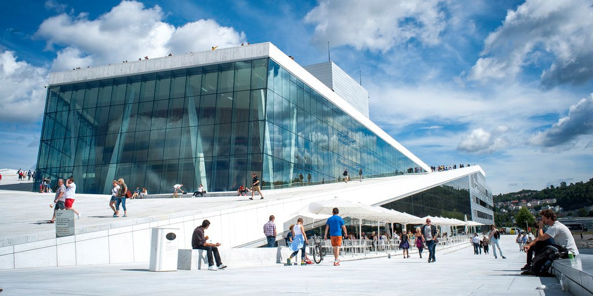

About The Sci-YAY!
Our History
The Sci-YAY! Museum is a dynamic and innovative institution dedicated to fostering a love for science and creativity. Founded in 2007, the museum has been a beacon of inspiration and learning for over a decade. The Oslo Museum of SCi-YAY began its journey in January 2007, with the vision of creating a world-class hub for science and creativity in Norway. This ambitious project was made possible through the generous support of private corporations and individuals, enabling the museum to open its doors to the public on March 16, 2012. The museum's mission is to ignite and strengthen engagement in science and the arts, fostering innovation and community growth. By inspiring solutions to real-world challenges, it aims to elevate individual, community, and national well-being, shaping a brighter future for all.
The Sci-YAY!'s mission is to initiate and bolster science engagement in elevating aspects of individual, community and national life to inspire solutions to real-world problems.